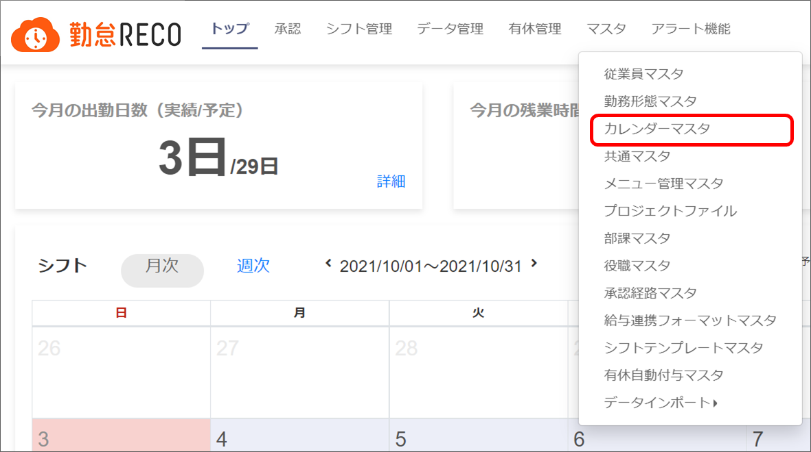
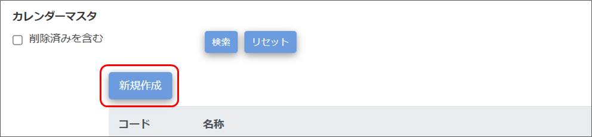
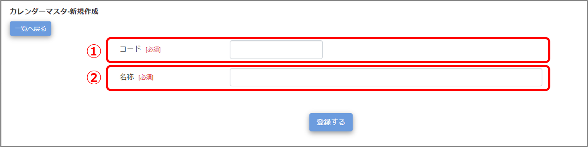
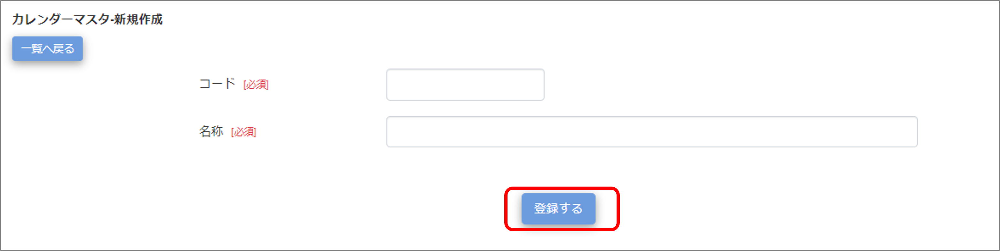
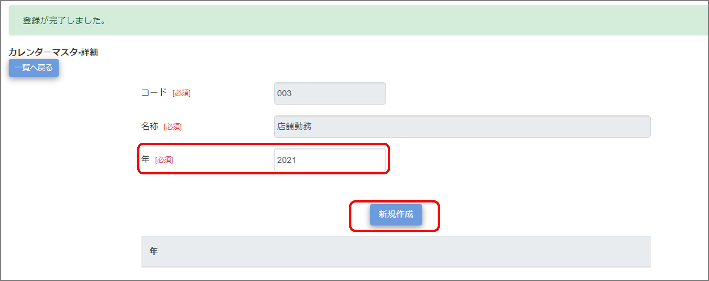
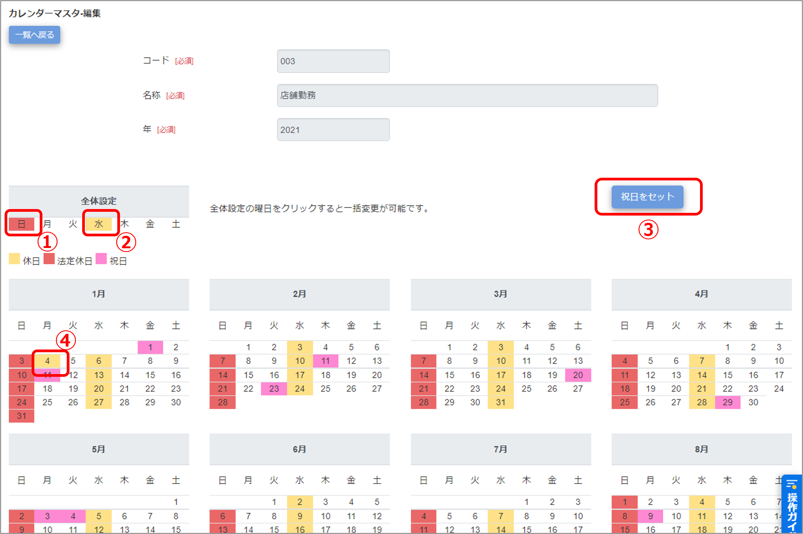
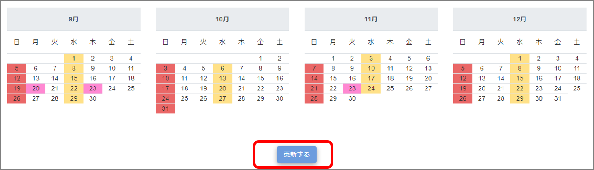
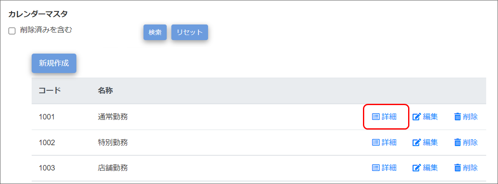
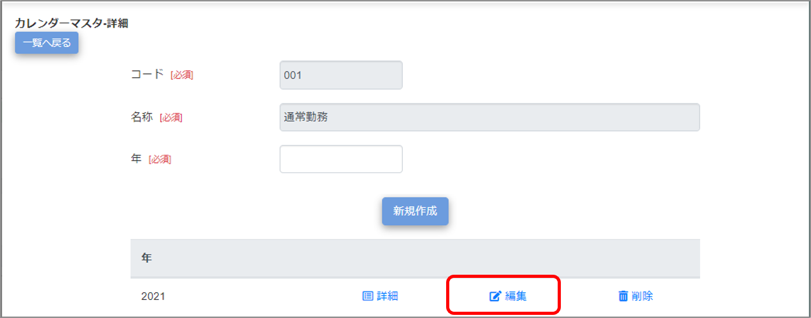

休日/法定休日の設定
会社の休日や祝日などをカレンダーに設定します。設定は「カレンダーマスタ」画面で実施します。
作成したカレンダーマスタは、「従業員マスタ」のカレンダー設定で使用します。
ご注意 |
|
|---|
 勤怠RECO［管理用］操作マニュアル
勤怠RECO［管理用］操作マニュアル
勤怠RECO［管理用］
操作マニュアル
会社の休日や祝日などをカレンダーに設定します。設定は「カレンダーマスタ」画面で実施します。
作成したカレンダーマスタは、「従業員マスタ」のカレンダー設定で使用します。
ご注意 |
|
|---|
［マスタ］をクリックし、［カレンダーマスタ］をクリックする

「カレンダーマスタ」画面が表示されます。
［新規作成］ボタンをクリックする

「カレンダーマスタ-新規作成」画面が表示されます。
設定項目を入力する

コード
カレンダーのコードを入力します。設定後の変更はできません。（一意／最大255文字）
マスタ一覧ではコード順でマスタが表示されます。
名称
カレンダー名称を入力します（最大255文字）。
［登録する］ボタンをクリックする

画面上部に「登録が完了しました。」とメッセージが表示され、画面が「カレンダーマスタ-詳細」画面に切り替わります。
登録するカレンダーの［年］を入力し、［新規作成］ボタンをクリックする

「カレンダーマスタ-編集」画面が表示されます。
出勤日、休日、法定休日、祝日を設定する
【例】 定休日が水曜、日曜、祝日で、他に会社で決めた休日（1月4日）がある場合

「全体設定」の水曜をクリックして休日（■）を設定する。
「全体設定」の日曜をダブルクリックして法定休日（■）を設定する。
［祝日をセット］ボタンをクリックして祝日（■）を設定する。
カレンダーの1月4日をクリックして休日（■）を設定する。
ヒント |
|
|---|
［更新する］をクリックする

画面上部に「更新が完了しました。」とメッセージが表示され、カレンダーの情報がマスタデータに登録されます。
休日を追加したり変更したりする場合の編集方法や、カレンダーマスタの名称変更／削除方法ついて説明します。
［マスタ］をクリックし、［カレンダーマスタ］をクリックする
「カレンダーマスタ」画面が表示されます。
編集したいカレンダーマスタの［詳細］をクリックする
削除したカレンダーを検索する場合は「削除済みを含む」にチェックを付けます。

「カレンダーマスタ-詳細」画面が表示されます。
ヒント |
|
|---|
［編集］をクリックする

「カレンダーマスタ-編集」画面が表示されます。
ヒント |
編集しようとしているカレンダーマスタに登録されている休日を確認したい場合は、［詳細］をクリックしてください。確認が済んだら［一覧へ戻る］ボタンで「カレンダーマスタ-詳細」画面に戻ります。 |
|---|
休日を変更または追加したい日の色を変更する
変更方法について詳しくは、「カレンダーマスタを登録する」の手順6を参照してください。
［更新する］をクリックする
画面上部に「更新が完了しました。」とメッセージが表示され、カレンダーの変更情報がマスタデータに登録されます。
削除を元に戻したい場合は、「削除済みを含む」にチェックを付けて検索し、「カレンダーマスタ-編集」画面で削除済みチェックを外して登録してください。